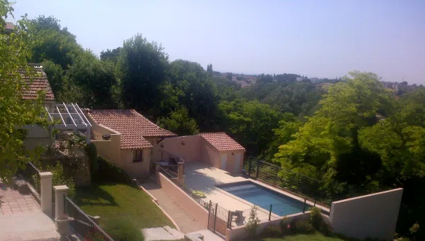

CLOS MARIE JOSEPH
Gîtes à Carpentras en Provence
Le studio
Idéalement situé en contrebas du terrain, et d’une surface de 17 m2, le studio inclut un lit double , une salle d’eau et un WC séparés, ainsi que d’ une mezzanine pouvant accueillir un couchage d’appoint
Sa petite terrasse qui surplombant la piscine fait du studio un endroit idéal pour des adolescents en quête d’indépendance ou un couple souhaitant de l’autonomie.

Vue du studio en contrebas de la Maison et surplombant la piscine